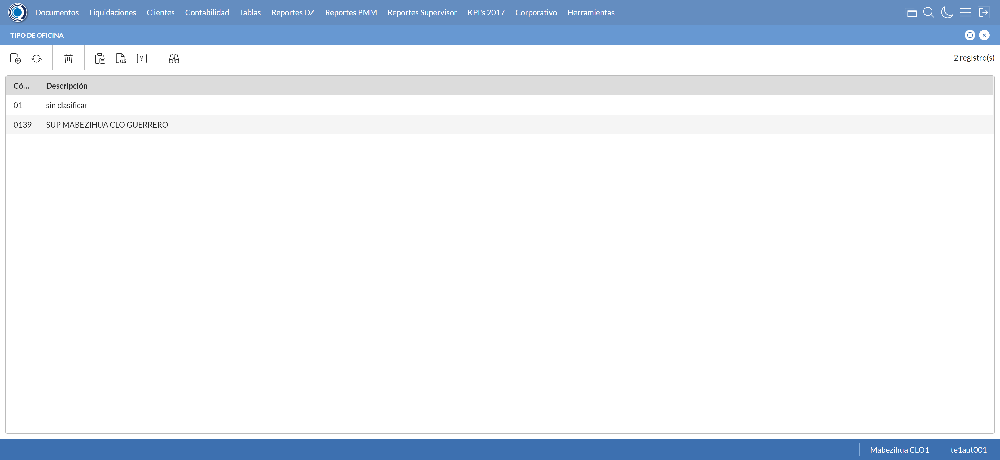
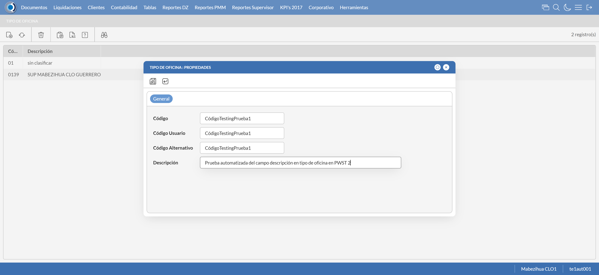
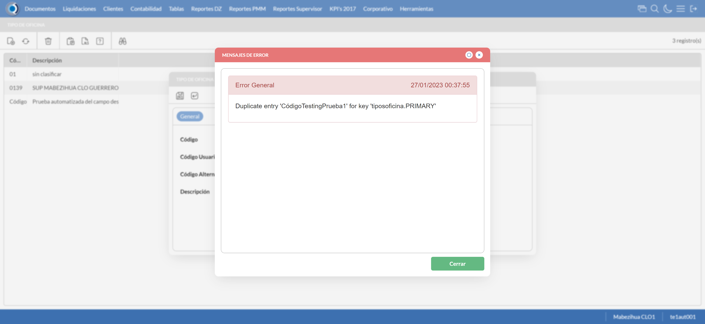
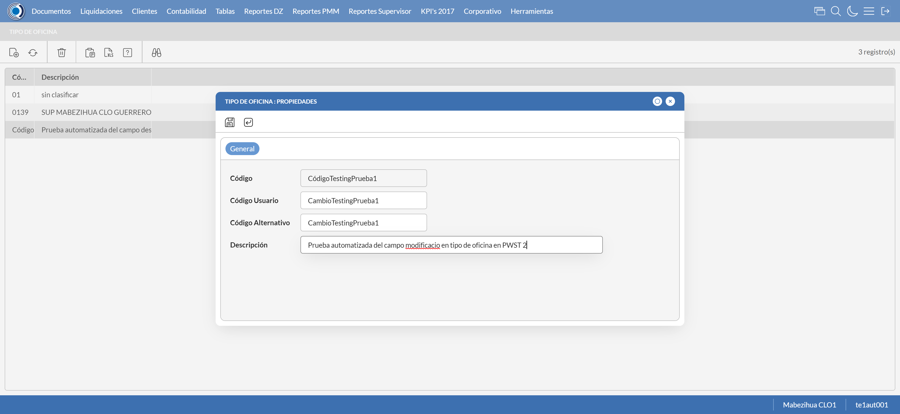
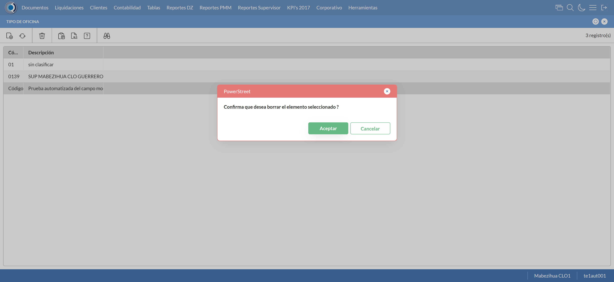

Desarrollado por : Area de Testing PWST
Fecha y hora de inicio : 2023-01-26 18:37:14
Duracion : 0:01:01.598568
Resultado : Total 8，Correctos 7 ，Errores 1 ，Taza de resultado 87.50%
Resumen 87.50% Errores 1 Fallidos 0 Correctos 7 Test realizados 8
| Caso de Prueba | Total | Correctos | Fallido | Error | Detalles | Captura del error |
| TiposOficina.Test: Escenario 1 de Tipos de Oficina | 8 | 7 | 0 | 1 | Detalles | |
test |
ft1_1: 2023-01-26 18:37:16,253 - root - INFO - Se abre el chrome
2023-01-26 18:37:17,264 - root - INFO - Entra a la URL
2023-01-26 18:37:17,382 - root - INFO - Maximiza la pantalla
Traceback (most recent call last):
File "C:\Users\PWST\AppData\Local\Programs\Python\Python311\Lib\site-packages\selenium\webdriver\remote\switch_to.py", line 87, in frame
frame_reference = self._driver.find_element(By.ID, frame_reference)
^^^^^^^^^^^^^^^^^^^^^^^^^^^^^^^^^^^^^^^^^^^^^^^^^
File "C:\Users\PWST\AppData\Local\Programs\Python\Python311\Lib\site-packages\selenium\webdriver\remote\webdriver.py", line 856, in find_element
return self.execute(Command.FIND_ELEMENT, {
^^^^^^^^^^^^^^^^^^^^^^^^^^^^^^^^^^^^
File "C:\Users\PWST\AppData\Local\Programs\Python\Python311\Lib\site-packages\selenium\webdriver\remote\webdriver.py", line 429, in execute
self.error_handler.check_response(response)
File "C:\Users\PWST\AppData\Local\Programs\Python\Python311\Lib\site-packages\selenium\webdriver\remote\errorhandler.py", line 243, in check_response
raise exception_class(message, screen, stacktrace)
selenium.common.exceptions.NoSuchElementException: Message: no such element: Unable to locate element: {"method":"css selector","selector":"[id="mainFrame"]"}
(Session info: chrome=109.0.5414.120)
Stacktrace:
Backtrace:
(No symbol) [0x00E56643]
(No symbol) [0x00DEBE21]
(No symbol) [0x00CEDA9D]
(No symbol) [0x00D21342]
(No symbol) [0x00D2147B]
(No symbol) [0x00D58DC2]
(No symbol) [0x00D3FDC4]
(No symbol) [0x00D56B09]
(No symbol) [0x00D3FB76]
(No symbol) [0x00D149C1]
(No symbol) [0x00D15E5D]
GetHandleVerifier [0x010CA142+2497106]
GetHandleVerifier [0x010F85D3+2686691]
GetHandleVerifier [0x010FBB9C+2700460]
GetHandleVerifier [0x00F03B10+635936]
(No symbol) [0x00DF4A1F]
(No symbol) [0x00DFA418]
(No symbol) [0x00DFA505]
(No symbol) [0x00E0508B]
BaseThreadInitThunk [0x764E00F9+25]
RtlGetAppContainerNamedObjectPath [0x77357BBE+286]
RtlGetAppContainerNamedObjectPath [0x77357B8E+238]
During handling of the above exception, another exception occurred:
Traceback (most recent call last):
File "C:\Users\PWST\AppData\Local\Programs\Python\Python311\Lib\site-packages\selenium\webdriver\remote\switch_to.py", line 90, in frame
frame_reference = self._driver.find_element(By.NAME, frame_reference)
^^^^^^^^^^^^^^^^^^^^^^^^^^^^^^^^^^^^^^^^^^^^^^^^^^^
File "C:\Users\PWST\AppData\Local\Programs\Python\Python311\Lib\site-packages\selenium\webdriver\remote\webdriver.py", line 856, in find_element
return self.execute(Command.FIND_ELEMENT, {
^^^^^^^^^^^^^^^^^^^^^^^^^^^^^^^^^^^^
File "C:\Users\PWST\AppData\Local\Programs\Python\Python311\Lib\site-packages\selenium\webdriver\remote\webdriver.py", line 429, in execute
self.error_handler.check_response(response)
File "C:\Users\PWST\AppData\Local\Programs\Python\Python311\Lib\site-packages\selenium\webdriver\remote\errorhandler.py", line 243, in check_response
raise exception_class(message, screen, stacktrace)
selenium.common.exceptions.NoSuchElementException: Message: no such element: Unable to locate element: {"method":"css selector","selector":"[name="mainFrame"]"}
(Session info: chrome=109.0.5414.120)
Stacktrace:
Backtrace:
(No symbol) [0x00E56643]
(No symbol) [0x00DEBE21]
(No symbol) [0x00CEDA9D]
(No symbol) [0x00D21342]
(No symbol) [0x00D2147B]
(No symbol) [0x00D58DC2]
(No symbol) [0x00D3FDC4]
(No symbol) [0x00D56B09]
(No symbol) [0x00D3FB76]
(No symbol) [0x00D149C1]
(No symbol) [0x00D15E5D]
GetHandleVerifier [0x010CA142+2497106]
GetHandleVerifier [0x010F85D3+2686691]
GetHandleVerifier [0x010FBB9C+2700460]
GetHandleVerifier [0x00F03B10+635936]
(No symbol) [0x00DF4A1F]
(No symbol) [0x00DFA418]
(No symbol) [0x00DFA505]
(No symbol) [0x00E0508B]
BaseThreadInitThunk [0x764E00F9+25]
RtlGetAppContainerNamedObjectPath [0x77357BBE+286]
RtlGetAppContainerNamedObjectPath [0x77357B8E+238]
During handling of the above exception, another exception occurred:
Traceback (most recent call last):
File "C:\xampp\htdocs\Versiones\automatizaciones\AutoPWST\01TO\testCase\TiposOficina.py", line 37, in test
self.driver.switch_to.frame("mainFrame")
File "C:\Users\PWST\AppData\Local\Programs\Python\Python311\Lib\site-packages\selenium\webdriver\remote\switch_to.py", line 92, in frame
raise NoSuchFrameException(frame_reference)
selenium.common.exceptions.NoSuchFrameException: Message: mainFrame
|
|
||||
test_000: Ingresa a la base de datos |
pt1_2: 2023-01-26 18:37:20,504 - root - INFO - Escribe el usuario
2023-01-26 18:37:20,584 - root - INFO - Escribe la contraseña
2023-01-26 18:37:20,680 - root - INFO - Se dio clic en el boton ingresar
2023-01-26 18:37:21,922 - root - INFO - Ejecutar Enterprise
2023-01-26 18:37:25,976 - root - INFO - Cambia entre pestañas
|
|
||||
test_001: Abre menu y ejecuta pantalla |
pt1_3: 2023-01-26 18:37:37,676 - root - INFO - Abre la pantalla de Tipos Oficina
2023-01-26 18:37:38,261 - root - INFO - La pantalla ejecutada es Tipos de Oficina.
2023-01-26 18:37:39,269 - root - INFO - Captura: C:\xampp\htdocs\Versiones\automatizaciones\AutoPWST\01TO\report\img screen：20230126_18_37_39.png
2023-01-26 18:37:50,130 - root - INFO - Se presiona el boton 'Nuevo', para crear un nuevo registro.
|
 | ||||
test_002: Abre la ventana de nuevo y crear un registro |
pt1_4: 2023-01-26 18:37:50,713 - root - INFO - Se abrio la pantalla para el ingreso de un registro nuevo.
2023-01-26 18:37:50,763 - root - INFO - El campo 'Codigo' si se encuentra visible.
2023-01-26 18:37:50,803 - root - INFO - El campo 'Codigo Usuario' si se encuentra visible.
2023-01-26 18:37:50,842 - root - INFO - El campo 'Codigo Alternativo' si se encuentra visible.
2023-01-26 18:37:50,890 - root - INFO - El campo 'Descrición' si se encuentra visible.
2023-01-26 18:37:50,969 - root - INFO - Ingresa el codigo del nuevo registro
2023-01-26 18:37:51,064 - root - INFO - Ingresa el codigo usuario del nuevo registro
2023-01-26 18:37:51,160 - root - INFO - Ingresa el codigo alternativo del nuevo registro
2023-01-26 18:37:51,306 - root - INFO - Ingresa la descripción del nuevo registro
2023-01-26 18:37:52,308 - root - INFO - Captura: C:\xampp\htdocs\Versiones\automatizaciones\AutoPWST\01TO\report\img screen：20230126_18_37_52.png
2023-01-26 18:37:52,878 - root - INFO - Se da clic en el boton Guardar; se debe crear un nuevo registro.
|
 | ||||
test_003: Repetir el registro creado anteriormente |
pt1_5: 2023-01-26 18:37:53,189 - root - INFO - Se presiona el boton 'Refrescar', para crear un nuevo registro igual al anterior.
2023-01-26 18:37:53,392 - root - INFO - Se presiona el boton 'Nuevo', para crear un nuevo registro igual al anterior.
2023-01-26 18:37:53,979 - root - INFO - Se abrio la pantalla para el ingreso de un registro nuevo.
2023-01-26 18:37:54,029 - root - INFO - El campo 'Codigo' si se encuentra visible.
2023-01-26 18:37:54,069 - root - INFO - El campo 'Codigo Usuario' si se encuentra visible.
2023-01-26 18:37:54,113 - root - INFO - El campo 'Codigo Alternativo' si se encuentra visible.
2023-01-26 18:37:54,142 - root - INFO - El campo 'Descrición' si se encuentra visible.
2023-01-26 18:37:54,216 - root - INFO - Ingresa el codigo del nuevo registro
2023-01-26 18:37:54,308 - root - INFO - Ingresa el codigo usuario del nuevo registro
2023-01-26 18:37:54,398 - root - INFO - Ingresa el codigo alternativo del nuevo registro
2023-01-26 18:37:54,533 - root - INFO - Ingresa la descripción del nuevo registro
2023-01-26 18:37:54,599 - root - INFO - Se da clic en el boton Guardar; No se debe crear un nuevo registro.
2023-01-26 18:37:55,601 - root - INFO - Captura: C:\xampp\htdocs\Versiones\automatizaciones\AutoPWST\01TO\report\img screen：20230126_18_37_55.png
2023-01-26 18:38:01,690 - root - INFO - Se presiona el boton 'Cerrar', para cerrar el mensaje de duplicidad de llave primaria
2023-01-26 18:38:02,700 - root - INFO - Captura: C:\xampp\htdocs\Versiones\automatizaciones\AutoPWST\01TO\report\img screen：20230126_18_38_02.png
2023-01-26 18:38:03,421 - root - INFO - Se presiona el boton 'Cerrar', para cerrar el mensaje de duplicidad de llave primaria
2023-01-26 18:38:03,570 - root - INFO - Se presiona el boton 'Cerrar', para cerrar la ventana
|
 | ||||
test_004: Modificar el registro |
pt1_6: 2023-01-26 18:38:03,738 - root - INFO - Se presiona el boton 'Refrescar', para proceder a modifcar el registro.
2023-01-26 18:38:05,449 - root - INFO - Se da doble click en el registro creado, para proceder a modificarlo.
2023-01-26 18:38:06,161 - root - INFO - Se modifica el contenido del campo Codigo Usuario
2023-01-26 18:38:06,273 - root - INFO - Se modifica el contenido del campo Codigo Alternativo
2023-01-26 18:38:06,445 - root - INFO - Se modifica el contenido del campo Descripcion
2023-01-26 18:38:07,446 - root - INFO - Captura: C:\xampp\htdocs\Versiones\automatizaciones\AutoPWST\01TO\report\img screen：20230126_18_38_07.png
2023-01-26 18:38:08,007 - root - INFO - Se da clic en el boton Guardar; se debe modificar la informacion del registro.
|
 | ||||
test_005: Eliminar el registro creado |
pt1_7: 2023-01-26 18:38:08,309 - root - INFO - Se presiona el boton 'Refrescar', para proceder a eliminar el registro.
2023-01-26 18:38:09,990 - root - INFO - Se da clic en el registro creado, para proceder a eliminarlo.
2023-01-26 18:38:10,081 - root - INFO - Se presiona el boton 'Eliminar', para eliminar el registro.
2023-01-26 18:38:11,082 - root - INFO - Captura: C:\xampp\htdocs\Versiones\automatizaciones\AutoPWST\01TO\report\img screen：20230126_18_38_11.png
2023-01-26 18:38:11,643 - root - INFO - Se confirma el eliminado del registro
2023-01-26 18:38:11,879 - root - INFO - Se presiona el boton 'Refrescar', para verificar que el registro se elimino.
2023-01-26 18:38:12,062 - root - INFO - Se presiona el boton 'Cerrar', para cerrar la pantalla de Tipos Oficina.
|
 | ||||
test_006: Cerrar_Navegador |
pt1_8: 2023-01-26 18:38:16,304 - root - INFO - Se cierra chrome
|
|
||||
| Caso de prueba | 8 | 7 | 0 | 1 | Taza de resultado：87.50% | |